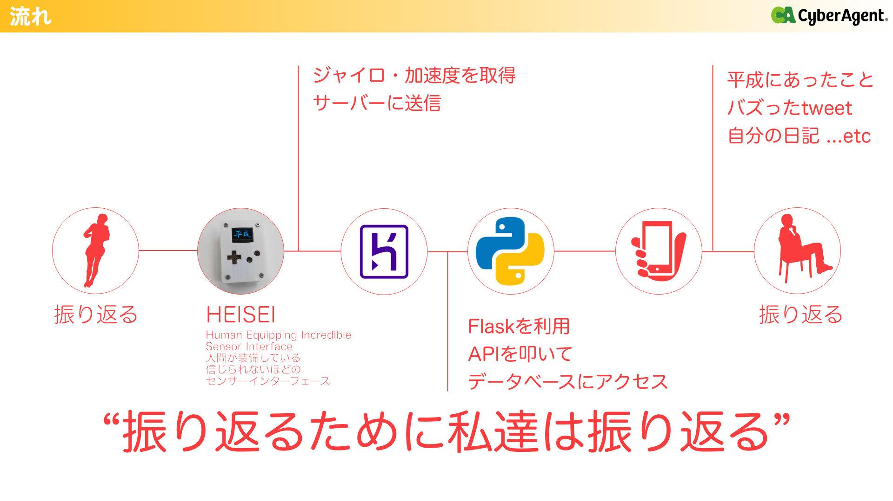

平成振り返りデバイス

担当
フロントエンド・API作成・デモ動画作成
使用技術
GAS、python、AdobeXD、スプレッドシート、html、css、js(anime.js,jquery)
フロントエンド・API作成・デモ動画作成
使用技術
GAS、python、AdobeXD、スプレッドシート、html、css、js(anime.js,jquery)
Why
平成最後のハッカソンに参加したときの作品です。
平成を楽しく振り返り、自分たちのチームが得意なモノづくりを生かすようなモノを作りました。
平成を楽しく振り返り、自分たちのチームが得意なモノづくりを生かすようなモノを作りました。
What
物理的に振り返ることで、誰でも楽しく過去にあったことを振り替えることができる。
そんなユニークなコンテンツ
そんなユニークなコンテンツ

構成

3Dプリンターとeps32からなるデバイス-HEISEI-から値を取得し、mqttを用いてサーバー側に送る。
スクレイピングでデータベースに元々保存していた情報にAPIでアクセスをし、振り向いた向き、速さなどの条件から携帯に表示する情報を変更しています。
スクレイピングでデータベースに元々保存していた情報にAPIでアクセスをし、振り向いた向き、速さなどの条件から携帯に表示する情報を変更しています。
デモ動画
意識したこと
- データベースから持ってくる際にタイムラグが少なくなるように構築
- 自分以外がハッカソンに初参加だったので、終着点を考えて開発をした
- 自分たちの強みを出せるように、かつweb開発経験がなかった（自分以外）ためバックエンドにpythonを使用
- 他の人の意見は基本採用するようにした
- 振り返る速度、向きによって得られる情報の年代、ジャンルを変更した。